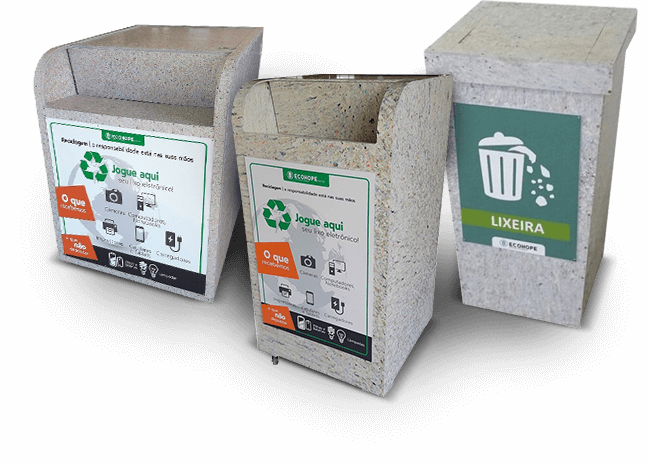

Do que se trata ?
Produtos elétricos e eletrônicos quebrados, danificados ou sem utilidade por algum motivo e pilhas descarregadas que devem ser descartados corretamente.
Problemas ambientais relacionados ao descarte incorreto desse tipo de lixo:
- Pode afetar o lençol freático, diminuindo a qualidade e a disponibilidade da água potável e prejudicando a agricultura e a segurança alimentar.
Como deve ser realizado o descarte desse lixo ?
O descarte do lixo eletrônico de pequeno porte deve ser realizado diretamente em Pontos de Entrega Voluntária (PEV), geralmente os PEVs são instalados em parques, supermercados, shoppings, centros comerciais, etc.
O descarte do lixo eletrônico de grande porte é feito por agendamento, após o agendamento, a empresa especializada no descarte desses produtos vão até o imóvel fazer a coleta, após a coleta peles separam os equipamentos que podem ser recuperados e descartam os que já não tem mais utilidade, separando a carcaça das partes eletrônicas para descartar corretamente.
Seja Consciente!
Para evitar os problemas citados anteriormente, basta realizar o descarte correto do lixo, sem misturá-lo com lixos resíduais, que também devem ser descartados corretamente.